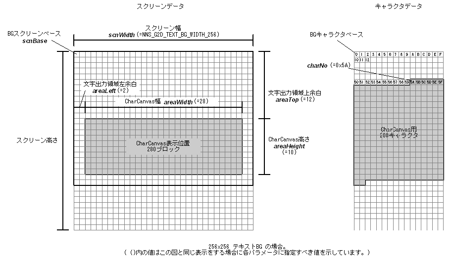

#include <nnsys/g2d/g2d_CharCanvas.h>
void NNS_G2dMapScrToCharText(
void* scnBase,
int areaWidth,
int areaHeight,
int areaLeft,
int areaTop,
NNSG2dTextBGWidth scnWidth,
int charNo,
int cplt
);| scnBase | [IN] Pointer to screen base. Must have 2-byte alignment. |
| areaWidth | [IN] CharCanvas width (in character units) |
| areaHeight | [IN]CharCanvas height (in character units) |
| areaLeft | [IN] Width from left side of screen to left side of displaying CharCanvas (in character units) |
| areaTop | [IN] Height from top side of screen to top side of displaying CharCanvas (in character units) |
| scnWidth | [IN] Screen width |
| charNo | [IN] Character No. at starting point of characters assigned to CharCanvas |
| cplt | [IN] Color palette No. specified for the screen |
None.
Configures Text BG screen so it can display CharCanvas.
Specify one of the following for scnWidth:
| NNS_G2D_TEXT_BG_WIDTH_256 | Screen width is 256 pixels (screen size is 256x256 or 256x512) |
| NNS_G2D_TEXT_BG_WIDTH_512 | Screen width is 512 pixels (screen size is 512x512 or 512x256) |

05/25/2005 Initial version.